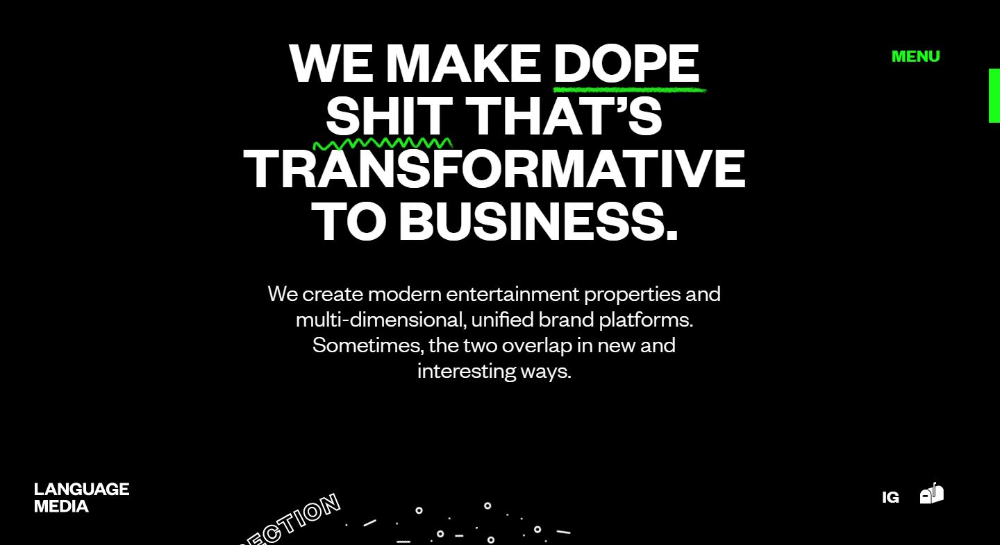
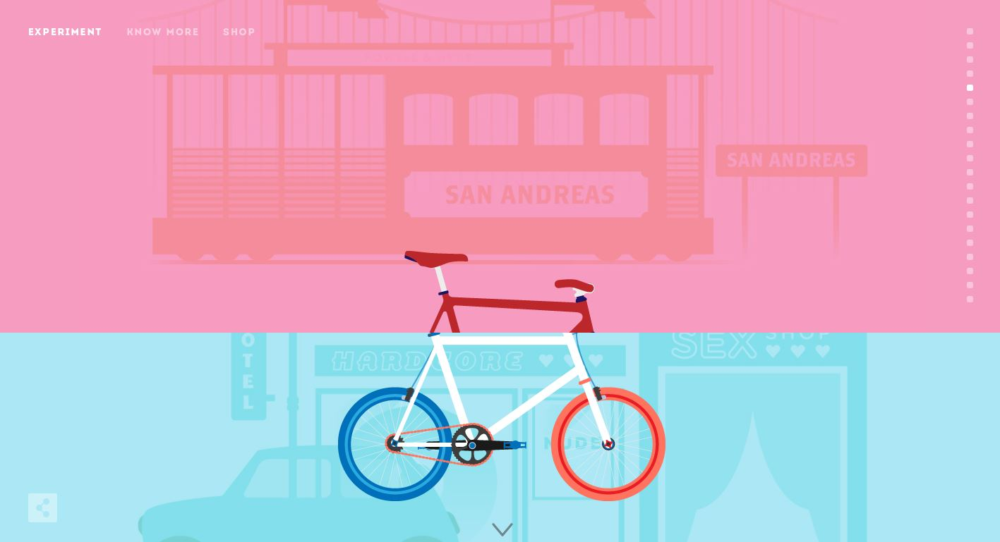
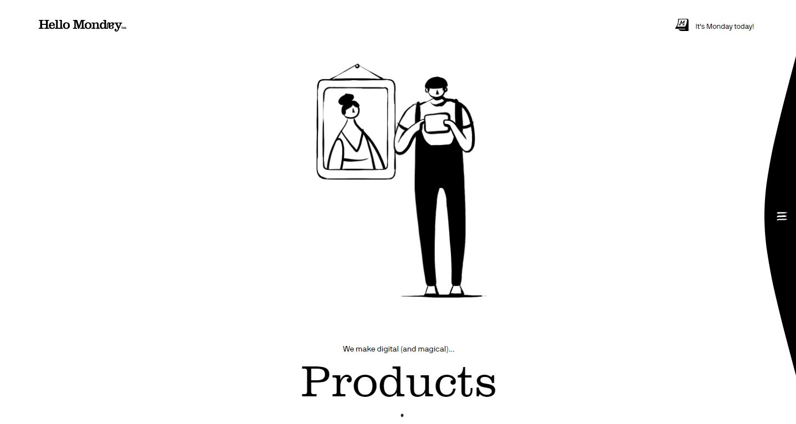
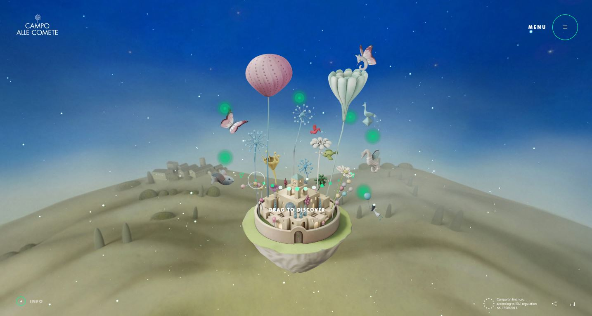
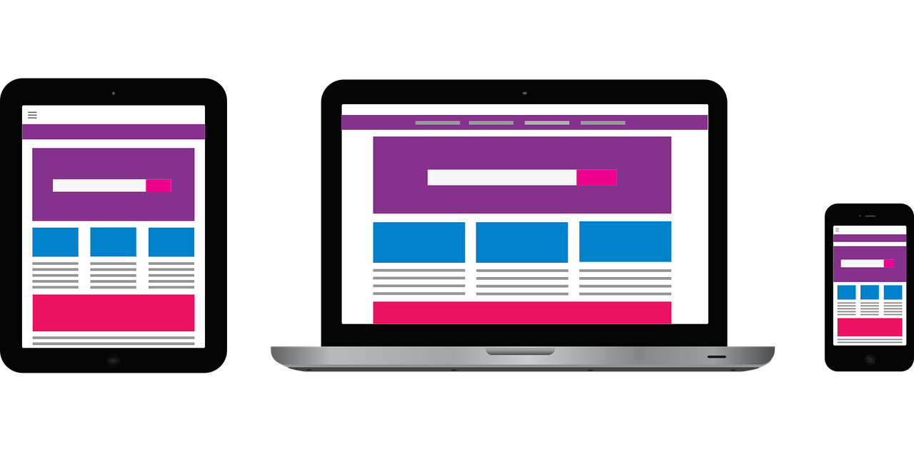
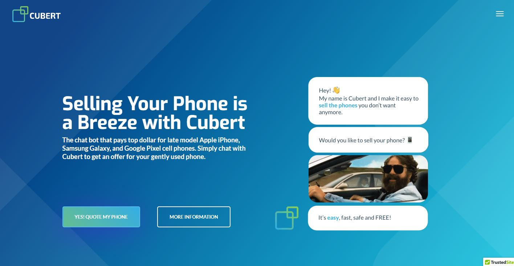
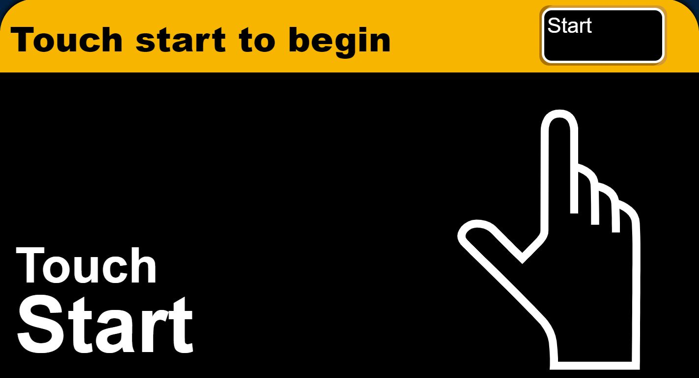
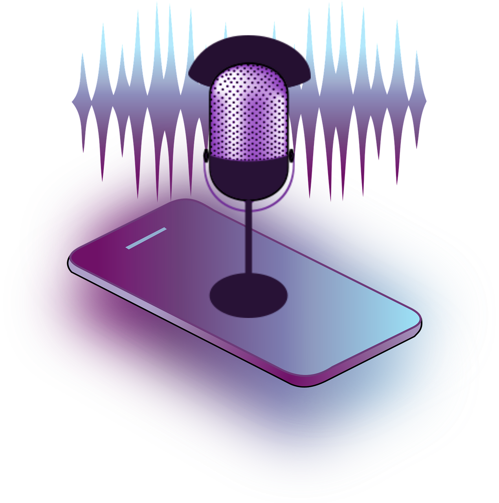

Топ-8 трендов 2020 года
Индустрия веб-дизайна не стоит на месте, и к 2020 году появилось много свежих идей.Возможности веб-дизайна расширяются, и вам необходимо отслеживать их все, чтобы соответствовать тенденциям.
ПодробнееДизайнеры отходят от традиционных подходов к созданию элементов навигации и боковых панелей веб-сайтов, а также адаптируют первоклассные технологии, такие как нейронные сети, дополненная реальность и интеллектуальные чаты.
1. Габаритные шрифты и элементы
В этом году дизайнеры используют крупные и видимые элементы, чтобы привлечь ваше внимание к продуктам на сайте. Вы можете встретить такие элементы повсюду на странице, включая заголовки, изображения, видео и меню. Негабаритные элементы не только привлекают внимание посетителей, но и помогают достичь поставленной цели. Но вы должны помнить, что ваша страница не должна содержать слишком много элементов, так как это может повредить скорости загрузки и выглядеть как беспорядок.
 Language Media2. Анимации, интегрированные GIF и динамические иллюстрации
Что еще может повредить скорости загрузки? Определенно видео. Они были популярны много лет, но индустрия предлагает что-то новое — анимацию. Дизайнеры предпочитают использовать яркие анимированные баннеры и изображения вместо тяжелых видео. Используя пользовательские иллюстрации и файлы GIF, вы добавите уникальности своему веб-сайту и продемонстрируете креативность своего бренда.
 Cyclemon3.Привлекательные динамические страницы
Вы читали предыдущие тенденции? Если да, то вы уже понимаете, что статические страницы не являются модными в 2020 году. Добавьте динамические блоки, такие как анимация js / css и другие интерактивные элементы, на свои веб-страницы, чтобы побудить пользователей совершать действия.
 Hello Monday4.3D-изображения и элементы
Плоские изображения уходят в 2020 году уступая объемным в новой форме. 3D-элементы теперь используются для создания эффекта глубины. Они действуют не так, как основные компоненты, но добавляют дополнительные привлекательные элементы, чтобы посетители продолжали смотреть на страницу.
 Campo alle comete5.Адаптивный дизайн
Одна тенденция привлекла к себе внимание много лет назад и не собирается покидать индустрию веб-дизайна — адаптивный дизайн. Тенденция ориентирована на различные типы устройств. Независимо от того, какие размеры и формы смартфонов и настольных компьютеров используют ваши клиенты, ваш сайт должен выглядеть идеально на любом.
6.Чат-боты
Среди текущих тенденций веб-дизайна можно упомянуть чат-ботов — программы, разработанные для имитации диалогов между пользователями и командой поддержки. Тенденция к чат-ботам может показаться необычной в топе, но только дизайнеры знают, как ими пользоваться и правильно их представить. Когда ваш бизнес растет, вы получаете больше клиентов, которым нужны ответы на различные вопросы. Вместе со страницей часто задаваемых вопросов вы можете использовать чат-ботов, которые могут не только общаться с клиентами, но и обрабатывать заказы, бронировать билеты, а также обрабатывать платежи.
 Cubert7.Брутализм
Брутализм — еще одна тенденция, на которую стоит обратить внимание в 2020 году. Брутальный стиль характеризуется отсутствием плавных линий и преобладанием квадратных и прямоугольных форм. Дизайнеры избегают мелких элементов дизайна и стараются использовать минимум деталей. Таким образом, тенденция имеет что-то общее с последней, ориентированной на негабаритные элементы.
 AINT WET8.Голосовой интерфейс пользователя
Голосовой интерфейс (VUI) дает возможность клиенту передвигаться по сайту при помощи собственного голоса, который в свою очередь превращается в определенные командами. Этот тренд очень удобен для использования вашем сайтом, а также даст гарантию, что люди с ограниченными физическими возможностями смогут воспользоваться выбранным интерфейсом.
Вы, наверное, убедились, что создание сайта практически не имеет границ. Подходы настолько разнообразны и многочисленны, что вы не можете просто выбрать любой из выше перечисленных. Современный дизайн сайта абсолютно безграничен и это больше всего ценится людьми. Имейте в виду, что ваш сайт является связующим инструментом между вами и вашими клиентами, поэтому приложите достаточно усилий и фантазии для того, чтобы получить тот самый положительный "feedback".